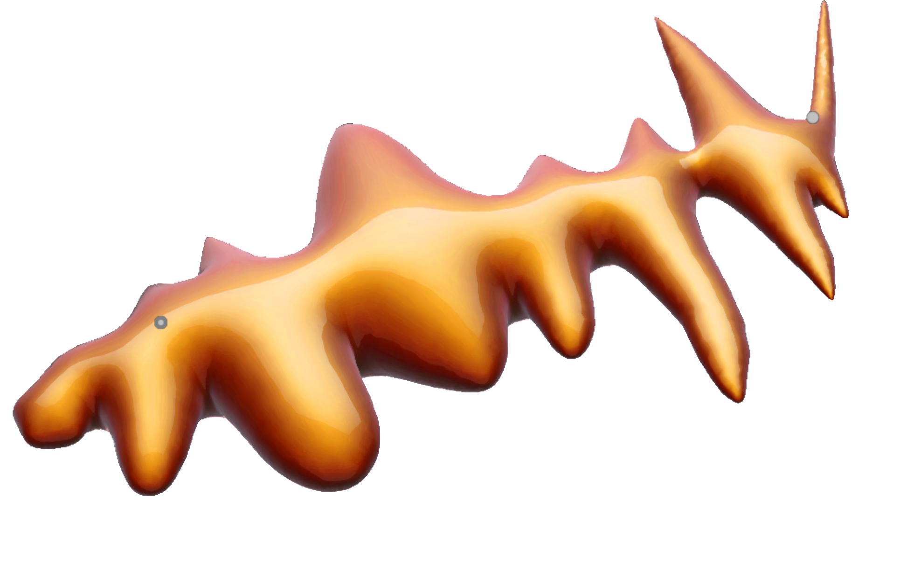
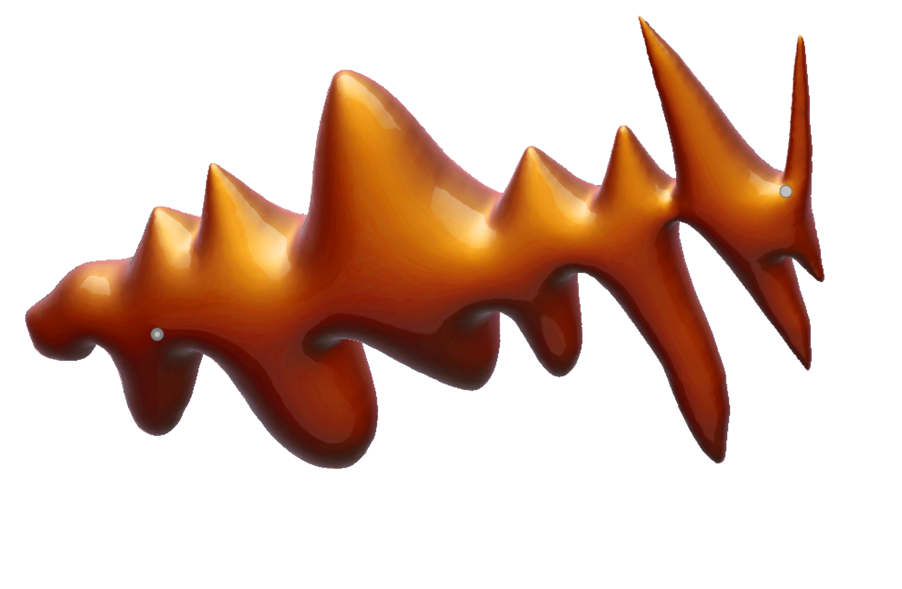

Stefan Fraunberger.
The Language of Things

The news of Stefan Fraunberger’s performance at the Bouquet Kyiv Stage festival in the courtyard of Saint Sophia Cathedral at the end of summer surprised me a lot. It was possible to hope that a full-fledged touring life would resume this year, except without hope. And it seemed all the more incredible to meet at home the artist, whom I have been following with interest for several years. Stefan Fraunberger is an electroacoustic composer and musician from Vienna. He also has qualifications in the fields of European philosophy, Arabic, and Oriental studies. Interests and circumstances prompted Stefan to travel–he managed to live and work in Belgium, Romania, a number of Middle Eastern countries, and India. His main musical instrument is the hammered dulcimer. In its regional variations, it creates a certain cultural continuum–from the Austrian Alps to South Asia, and further in all directions. Mostly, Fraunberger performs with the Persian version of the hammered dulcimer–the santur. Using effects pedals and amplification, he explores the new sound capabilities of this ancestor of the piano. His purpose is to create a kind of synthesizer from an ancient instrument, a loud "spaceship". Another striking example of such sonic archeology is Fraunberger's long-running project Quellegeister, which can be roughly translated as "source-spirits." In it, he explores the abandoned Baroque organs in the desert Saxon and Landler churches of Transylvania. The composer's interest is chained to the influence of the non-human on man-made things. The sound of the damaged instruments can evoke ghostly associations in the listener. I can add that the last record in this series is one of the few ones that caused a reaction in my cat. Stefan used to theoretically substantiate his artistic practice. We found shelter from the drizzle under a tree in the famous courtyard with ravens on Reitarska Street. My goal was trying to explain the philosophy of Fraunberger’s language of things in a simple way.
But still “bayan” is translated with “defined”. The limit between the two objectivities defines both of them. So the limit is the definition, not the object. If there is no limitation, then there is no existence, no world.
For me, it seems important to create contexts, not to work with existing ones. That's the way things go: relations define objects. I think the movement of limitations is defining us and our perception of things.
So my intention is to develop some kind of language, being related to amplification. My aim is to create certain limitations. If the hammered dulcimer or the santur is amplified, you have a wholly different sound. You just have the electromagnetic vibrations of the strings. And with this, you can do different things. Whatever you want! So it’s not just the instrument and the strings. It’s also the loudspeakers speaking. And again it’s in between, to play the instrument. Don’t just let the computer do it or have fancy tools and products, let ‘em roll and feel like a hero. OK [laughs]. And you think you’re playing live! It’s interesting, performing live with an instrument without falling into dogmas of how to do things and how not to do things. Finally, a lot of my work is creating new instruments, being based on relating wholly different technical, cultural, and ontological approaches.
As always things got perverted and people, not having the necessary education, not knowing too much about postcolonial studies, would think anything outside of universal Western culture is cultural. And if you intervene with it, then it’s cultural appropriation. This is again some kind of colonialism. Because you take the colonial culture as universal and everything else is being protected like this raven in the cage [points at the raven literally]. Culture being protected like in the zoo. And mostly it’s also not so real, cause anyhow the whole world is covered with the same European cosmology till now. The notion of different cultures is slightly nostalgic. There are different languages, and people having different habits, but not in the sense of the 19th century. Then the human world consisted of completely different cultures. But through globalisation, the world was missionised with a certain kind of technology. The whole naturalistic Euro-religion of Enlightenment was flattening the world. Isn’t it an irony that those that missionised the planet with the knowledge of the world being round finally made it flat?
"I try to define the language of things and let them talk in-between”
